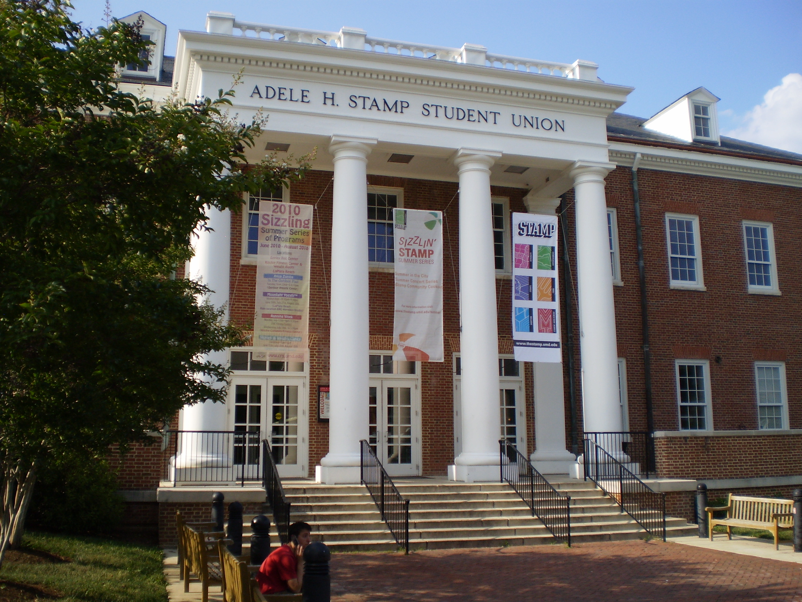

IT Analyst Intern
Analyze and optimize ServiceNow workflows against ITIL best practices and global standards. Track KPIs, flag outdated services, and recommend improvements that make IT operations more usable and more efficient.
Experience
Internships, campus operations, and service work that taught me how to be useful: analyze the problem, talk to people clearly, and keep execution clean.
Analyze and optimize ServiceNow workflows against ITIL best practices and global standards. Track KPIs, flag outdated services, and recommend improvements that make IT operations more usable and more efficient.

Coordinated AV setups for campus events, worked directly with clients, and troubleshot microphones, projectors, and computers under real-time pressure. A lot of the job was making complex logistics feel smooth.

Supported software updates, hardware troubleshooting, inventory management, and ticketing process improvements across the district. The work centered on reliability and keeping essential equipment running.
Helped provide free tax preparation services to the local community while building experience in tax law, client interaction, and detail-heavy financial work.
What Carries Over
Different settings, same habit: figure out what matters, reduce noise, and leave the system cleaner than it was before.
Operations
Workflow analysis, service governance, KPI tracking, and process cleanup.
Technical
Troubleshooting, systems thinking, software updates, and practical support work.
People
Client communication, collaboration, and staying calm when things get messy.